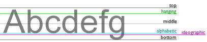
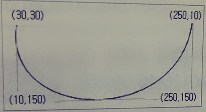

자바스크립트로 Canvas 제어
HTML 5 캔버스의 사용법
여기서는 HTML5 캔버스의 사용법 및 캔버스에 도형을 그리는 방법에 대해서 살펴본다. HTML5에서 제공하는 캔버스는 <canvas>태그를 사용해서 웹 페이지에 그래픽을 그린다. 이때 자바스크립트를 사용해서 그때그때 그려지는 것들이 표시된다. <canvas>태그는 단지 그래픽을 그릴 수 있는 영역을 제공하는 컨테이너(그릇)로, 실제로 그래픽을 그리기 위해서는 자바스크립트를 사용해야 한다. 캔버스는 각종 도형, 문자열 및 그림을 그릴 수 있는 메소드를 제공한다. <canvas>태그는 현재 주요 웹 브라우저에서 대부분 지원한다.
HTML 5 캔버스의 사용법
HTML5 캔버스를 사용하려면 <canvas>태그를 사용한다. 캔버스는 그래픽을 그릴 수 있는 영역으로 너비(width)와 높이(height)를 속성으로 갖는다. 또한 자바스크립트에서 캔버스를 제어하기 위해서는 id속성도 필요하다.
canvas 태그는 HTML 페이지에서 특정 구역을 정의하는데 쓰이는 div 태그안에 넣어서 사용하는 것이 좋다. 캔버스에 표시할 마우스 포인터의 상대적인 위치등을 얻을 수 있기 때문이다. 따라서 권장 형태르르 사용한 가로 300px, 세로 200px의 캔버스를 작성한 예시는 다음과 같다.
캔버스 제어하기
여기서는 캔버스 영역에 그리기 위해 자바스크립트로 영역을 제어하는 방법을 살펴본다. 앞에서는 canvas 태그를 사용해서 영역을 만드는 것을 살펴보았다. 만들어진 캔버스에 도형이나 그림 등을 그리거나, 그려진 것들을 움직이게 만드는 등의 제어는 자바스크립트에서 한다.
//여기에 캔버스를 제어하는 코드를 입력한다.
</script>
자바스크립트는 HTML페이지가 모두 로드된 후에 사용되는 것이 좋기 때문에 캔버스를 제어하는 코드도 $(document).ready()메소드 안에 기술한다.
$(document).ready(function(){
//캔버스제어코드들
});
</script>
캔버스 제어 코드가 복잡한 경우 별도의 함수로 따로 정의해서 js파일로 작성한다.
$(document).ready(function(){
drawShape();//캔버스 제어 메소드 호출
});
function drawShape(){//캔버스 제어 메소드
//캔버스 제어 코드들
}
</script>
자바스크립트에서 캔버스를 제어하기 위해서는 먼저 2가지를 얻어내야 한다. 첫 번째가 그림이 그려질 영역인 캔버스를 얻어내야 하고, 두 번째는 그리기 작업을 위한 그래픽 2D콘텍스트를 얻어내야 한다. 다음과 같은 순서로 코딩된다.
1. 그림이 그려질 캔버스 영역 얻어내기
HTML 코드 부분에 정의한 <canvas>태그를 자바스크립트에서 제어할 수 있도록 얻어낸다. 자바스크립트에서 HTML의 <canvas id = "canvas1" width = "300" height = "200"></canvas>과 같은 코드에서 캔버스를 얻어내려면 id속성 값을 사용해서 유일한 태그에 접근해야 한다. 자바스크립트에서 id 속성의 값을 얻어내려면 documnet.getElementById("id속성값") 또는 $("#id속성값")[0]을 사용해서 한다. 만일 jQuery를사용한다면 var cvs = $("#canvas1")[0];과 같이 써서 canvas 엘리먼트 객체를 cvs 변수에 저장할 수 있다.
$(document).ready(function(){
var cvs = $("#canvas1")[0]; -- ①
});
--HTML--
<cavnas id = "canvas1" width = "300" height = "200"></canvas>
2. 그리기 작업을 위한 그래픽 2D콘텍스트 얻어내기
얻어낸 canvas 엘리먼트객체에서 getContext("2d"); 메소드를 사용해서 2D콘텍스트를 얻어낸다.
$(document).ready(function(){
var cvs = $("#canvas1")[0]; //①cvs는 canvas 엘리먼트 객체가 저장된 객체 변수
var ctx = cvs.getContext("2d");//②그래픽 2D 콘텍스트 얻어내기
});
--HTML--
<canvas id = "canvas1" width = "300" height = "200"></canvas>
위의 코드들 다음엔느 실제로 그리는 작업을 수행하는 메소드를 사용하며, 이들은 다음절에서 살펴본다.
도형 문자열. 이미지 그리기
여기서는 캔버스에 도형, 문자열, 그림 그리기 등의 그리기 메소드를 살펴보고, 그리는 바업을 예제를 통해 학습한다.
캔버스에 그리기 위해서 ① canvas 엘리먼트 객체를 얻어내고, 이 얻어낸 객체의 getContext("2d") 메소드를 사용해서 ②2D콘텐스트 객체를 얻어내고 나면 이제 ③그리기 메소드를 사용해서 그리기 작업을 할 수 있다. 그리기 관련 메소드들은 [2D 콘텍스트 객체, 그리기 메소드()]와 같은 형태로 사용한다.
var cvs = $("#canvas1")[0];//①캔버스 객체를 얻어냄
var ctx = cvs.getContext("2d");//②캔버스 객체로부터 2D콘텍스트 객체를 얻어냄
//(10,10)좌표에 가로 80 , 세로 50 크기의 채워진 사각형을 그린다.
etx.fillRect(10,10,80,50); //③캔버스 객체로부터 2D콘텍스트 객체를 얻어냄
});
그리기의 가장 기본이 되는 주요 속성 및 메소드는 다음과 같다. (좀 더 자세한 사항은 http://www.w3schools.com/tags/ref_canvas.asp 또는 https://developer.mozilla.org/en-US/docs/Web/API/Canvas_API/Tutorial을 참조한다.)
| 속성 | 설명 |
|---|---|
| data | 주어진 이미지 데이터가 포함된 ImageData 객체를 리턴 빈 ImageData 객체를 생성 후에 파랑색을 지정하고 화면에 출력: 화면에 파란 사각형 출력 //가로 100, 세로 100의 빈 ImageData 객체 생성 var imgData = ctx.createimageData(100,100); imgData.data[i+0] = 0; //R: 빨강색 imgData.data[i+1] = 0; //G: 초록색 imgData.data[i+2] = 255; //B: 파랑색 //0-완전투명, 255-완전 불투명 imgData.data[i+3] = 255; //Alpha:투명도 ctx.putImageData(imgData,20,20); //화면에 이미지 출력 |
| fillStyle | 색, 그러데이션, 패턴 등으로 채우기를 지정하거나 얻어냄.예))도형의 채우기 색을
초록색으로 지정 ctx.fillStyle = "#00FF00"; |
| font | 텍스트 폰트를 지정하거나 얻어냄. 예))40px 크기의 Arial 폰트를 갖는 글꼴을 지정 ctx.font = "40px.Arial";//글꼴 크기와 폰트 지정 //(10,10)좌표에 40px 크기의 Arial 폰트를 갖는 "테스트 출력 ctx.fillText("테스트",10,10); |
| height | ImageData 객체의 높이(이미지의 세로 높이)를 얻어냄. 예))ImageData 객체의 높이를 알림상자에 표시 var ImgData = ctx.createImageData(100,100); alert(imgData.height); |
| lineCap | 선의 끝 모양의 스타일을 지정하거나 얻어냄. 끝 모양에는 butt(평평한 끝모양),
round(butt+라운드 사각형), square(butt + 사각형)가 있음. round와
square가 butt보다 좀 더 길다. ctx.lineCap = "butt"; ctx.lineCap = "round"; ctx.lineCap = "square"; |
| lineJoin | 두 선이 모서리 부분에서 만났을 때의 모양을 지정하거나 얻어냄. bevel,
round, miter가 있음. ctx.lineJoin = "bevel";//아주 약간 비스듬함 ctx.lineJoin = "round";//완전히 둥금 ctx.lineJoin = "miter";//이건 완전히 각이 진것이고 |
| lineWidth | 선의 두께를 지정하거나 얻어냄. 예))선의 두께를 5픽셀로 지정 ctx.lineWidth = 5; |
| miterLimit | 최대 miter값을 지정하거나 얻어냄. miter값은 안쪽 코너에서 바깥쪽 코너간의
거리 그러니까 모서리 부분의 테두리 부분 굵기를 의미한다. 예))최대 miter 값을 10으로 지정. ctx.miter=10;//10이 기본값 |
| shadowBlur | 그림자의 퍼짐(번짐) 값을 지정하거나 얻어냄. 숫자가 클수록 더 퍼짐. 예))그림자의 퍼짐을 10으로 지정 ctx.shadowBlur =10; |
| shadowColor | 그림자의 색을 지정하거나 얻어냄. 예))그림자의 색을 회색으로 지정 ctx.shadowColor ="gray"; |
| shadowOffsetX | 도형으로부터 그림자의 수평 거리를 지정하거나 얻어냄. 숫자가 커질수록 그림자가
가로로 길어진다. 예))그림자의 가로 길이를 10으로 지정 ctx.shadowOffsetX = 10; |
| shadowOffsetY | 도형으로부터 그림자의 수직 거리를 지정하거나 얻어냄. 숫자가 커질수록 그림자가
세로로 길어진다. 예))그림자의 세로 길이를 10으로 지정 ctx.shadowOffsetY = 10; |
| strokeStyle | 도형이나 글자의 테두리 선에 사용되는 선 색을 지정하거나 얻어냄 예))선색을 검정색으로 지정 ctx.strokeStyle = "#000000"; |
| textAlign | 텍스트의 맞춤을 지정하거나 얻어냄. center, left, right,
start가 있다. left와 start는 같으며,지정한 좌표를 중심으로 왼쪽 맞춤을 한다.
right와 end는 같으며, 지정한 좌표를 중심으로 오른쪽 맞춤을 한다. center는 지정한
좌표를 중심으로 가운데 맞춤을 한다. 예))(100,50)좌표에 왼쪽 맞춤으로 문자열 그리기 ctx.textAlign = 'left';//왼쪽 맞춤 ctx.fillText('test',100,50); (100,50)좌표에 문자열 그리기 |
| textBaseline | 텍스트의 베이스 라인을 지정하거나 얻어냄. alphabetic, top,
hanging, middle, ideographic, bottom이 있다.  예))문자열의 베이스라인 지정 ctx.textBaseline = "alphabetic";//기본값으로 지정 |
| width | ImageData 객체의 너비(이미지가로의 너비)를 얻어냄. 예))ImageData 객체의 너비를 알림 상자에 표시 var imgData = ctx.createImageData(100,100); alert(imgData.width); |
캔버스의 그리기 관련 메소드들
| addColorStop() | 그러데이션에서 색상과 중단 위치를 설정한다. 예))//선형그라데이션 생성 var grad = ctx.createLinearGradient(0,0,180,0);//x좌표,y좌표,가로축 그라디언트, 세로축 그라디언트 grad.addColorStop(0,"blue");//제1 색상 지점 grad.addColorStop(1,"white");//제2 색상 지점 ctx.fillStyle = grad; //채우기 색으로 그러데이션 지정 ctx.fillRect(20,20,200,100);//채워진 사각형 그린다. |
| arc() | 호를 그린다. 예))(175,175) 좌표에 반지름 50,0~Math.PI*2(360도)로 그려지는 호를 그린다. 0~Math.PI*2(360도)는 원이 됨. ctx.arc(175,175,50,0,Math.PI*2,true); |
| arcTo() | 두 탄젠트 사이의 호를 그린다. 예))시작호의 (155,20) 좌표, 끝 호의 (150,80)좌표에 반지름 60의 호 ctx.arcTo(150,20,150,80,60); |
| beginPath() | 다각선의 시작선을 그리거나 현재의 선을 재설정한다. 예))ctx.beginPath(); |
| bezierCurveTo() | 큐빅 베지어 곡선을 생성한다.  ctx.beginPath(); ctx.moveTo(30,30); ctx.bezierCurveTo(10,150,250,150,250,10); |
| clip() | 원래의 캔버스 영역으로부터 일부의 영역을 얻어낸다. 예))ctx.clip(); |
| closePath() | 현재의 선을 다각선의 시작점으로 연결한다. 도형 등을 그릴 때 마지막 선이 시작점과
연결되어야 도형이 이루어진다. 채워진 도형을 그릴 때는 생략해도 된다. 예))ctx.closePath(); |
| createImageData() | 빈 ImageData 객체를 생성한다. 예))가로 100, 세로 100픽셀 크기의 빈 ImageData 객체 생성 var imgData = ctx.createImageData(100,100); |
| createLinearGradient() | 선형 그러데이션을 생성한다. 예))var grad = ctx.createLinearGradinet(0,0,180,0); |
| createPattern() | 패턴을 생성한다. 패턴 이미지는 repeat, repeat-x,
repeat-y,no-repeat를 사용해서 반복 여부를 결정 예))패턴을 생성하고 적용 var image = new Image(); image.src="b2s.png"; image.onload = function(){ var ptn = ctx.createPattern(image,'repeat'); ctx.rect(0,0,200,100); ctx.fillStyle = ptn; ctx.fill(); } |
| drawImage() | 캔버스 상에 이미지, 동영상, 다른 캔버스 등을 그린다(표시한다) 예))이미지 객체를 생성하고 이미지를 그린다. var image = new Image();//Image 객체 생성 image.src="picture3.png";//이미지 파일 지정 image.onload = function(){//이미지가 로딩되면 자동 실행 tx.drawImage(image,0,0,width,height);//이미지를 그린다. } |
| fill() | 도형을 채우기 한다. 예))ctx.fill(); |
| fillRect() | 채우기 된 사각형을 그린다. 예))ctx.fillRect(10,10,80,50); |
| fillText() | 채우기 된 글자를 그린다. 예))ctx.fillRect("테스트",300,50); |
| getImageData() | ImageData객체를 리턴한다. 예))(10,10) 좌표의 이미지를 imgData 객체로 얻어내서 imgData에 저장 var imgData =ctx.getImageData(10,10,20,20); |
| isPointInPath() | 주어진 포인트가 현재의 포인트이면 true값을 리턴한다. 예))if(ctx.isPointInPath(30,100)){} |
| lineTo() | 다각선/다각형을 그릴 때 선을 추가한다. 이렇게 선을 추갛서 다각선/다각형이
만들어진다. 예))ctx.lineTo(100,175); |
| measureText() | 문자열 객체를 얻어낸다. 예))var str1 = "test"; alert(ctx.measureText(str1).width); |
| moveTo() | 선을 추가하지 않고 포인트를 이동한다. 예))ctx.moveTo(75,150); |
| putImageData() | 이미지 데이터를 캔버스에 넣는다. 화면에 생성된 이미지 데이터(이미지)를 출력한다. 예))(10,100)좌표에 imgData 객체가 가진 내용(이미지)을 출력한다. ctx.putImageData(imgData,10,100); |
| quadraticCurveTo() | 이차 베지어 곡선을 생성한다. //이미지 넣자 여기에 ctx.moveTo(10,10); ctx.quadraticCurveTo(100,100,150,10); |
| rect() | 사각형을 생성한다. fill()메소드나 stroke()메소드를 사용해서 채우거나
그려야 사각형이 화면에 표시된다. 예)ctx.rect(0,0,200,100); |
| restore() | 전에 저장된 경로 상태와 속성을 얻어낸다. save()메소드를 사용해서 저장한
스타일 등을 다시 재사용할 때 사용. save()와 쌍으로 restore()메소드가 바로 직전에
사용된 save()와 매치됨. 예))//원래 스타일 -검은색, 기본값 ctx.fillRect(0,0,100,100);//원래 스타일로 그린 검게 채워진 사각형 ctx.save();//원래 스타일 저장:1 ctx.fillStyle = '#0000FF';//새 스타일1 - 파랑색 ctx.fillRect(110,0,100,100);//새 스타일 1로 그린 파랗게 채워진 사각형 ctx.save();//새 스타일1 저장:2 ctx.restore();//바로 전에 저장된 save()스타일 적용: 2, 파랑 ctx.restore();//전에 전에 저장된 save()스타일 적용: 1, 검정 ctx.fillRect(220,0,100,100);//원래 스타일로 그린 검게 채워진 사각형 |
| rotate() | (도형 등을)회전한다. 각도(angle)는 도(degree)가 아니라
라디안(radian, 호도)이기 때문에 radian - (Math.PI/180)*degree와
같이 변환해서 상요한다. 즉, rotate((Math.PI/180)*degree)과 같은 형태로
사용한다. 예)) ctx.fillStyle = "#DBDBDB"; ctx.fillRect(100,100,100,100);//원래 형태의 사각형 ctx.rotate((Math.PI/180)*5); //회전 ctx.fillStyle = "#000000"; ctx.fillRect(100,100,100,100); //회전 후 사각형 |
| save() | 현재의 내용을 저장한다. restore() 메소드와 쌍으로 사용됨. ctx.fillRect(0,0,100,100); ctx.save(); |
| scale() | (도형 등의)크기를 조정한다. scale(가로배수, 세로배수)와 같이 사용하며,
scale()메소드를 사용한 후에는 같은 크기의 도형도 조정된 크기로 표현한다. ctx.strokeRect(10,10,30,20); ctx.scale(2,2); //가로, 세로 2배 크기 조정 ctx.strokeRect(10,10,30,20); |
| setTransform() | 현재의 트랜스폼을 재설정하고 transform()메소드가 자동실행된다.
setTransform(scaleX, skewX,skewY,scaleY,moveX,moveY)와
같은 형태로 사용한다. //가로 1배 확대, 가로 0.1, 세로-0.1 왜곡, 세로 1배 확대, 가로 30, 세로 10 이동 ctx.fillStyle = "gray"; ctx.fillRect(0,0,200,100)//회색 사각형 ctx.setTransform(1,0.1,-0.1,1,30,10);//트랜스폼 ctx.fillStyle = "black"; ctx.fillRect(0,0,200,100);//트랜스폼된 검은 사각형 |
| stroke() | 선을 그린다. 예))ctx.stroke(); |
| strokeRect() | 채워지지 않은 사각형을 그린다. 예))ctx.strokeRect(100,10,80,50); |
| strokeText() | 채워지지 않은 글자를 그린다. 예))ctx.strokeText("Hello",200,50); |
| transform() | 현재의 트랜스폼을 대체한다.
transform()scaleX,skewX,skewY,scaleY,moveX,moveY)와 같은
형태로 사용한다. 예))단독으로 쓰이면 setTransform()을 쓰는 것과 같다. ctx.transform(1,0.1,-0.1,1,30,10); |
| translate() | 캔버스의(0,0)위치를 지정한 좌표로 이동한다. translate(x,y)와 같이
사용하며, 시작 좌표는 (x,y)로 재설정한다. 예))ctx.fillRect(10,1,50,50); ctx.translate(100,50);//시작 좌표(100,50)으로 이동 ctx.fillRect(10,10,50,50); |
p01에 연습 하나 하기
p02에 연습 하나 더 추가 (이미지 나타내기)
2. 캔버스를 사용한 에니메이션
지금까지 우리는 자바스크립트를 사용해서 <canvas>태그를 제어했다. 마찬가지로
상호동작하는 에니메이션도 자바스크립트를 사용해서 쉽게 만들 수 있다. 여기서는
<canvas>태그와 자바스크립트를 사용해서 에니메이션을 구현하는 방법을 학습한다.
일단
그려진 그림은 고정적으로 그려진 그 상태를 유지한다. 만일 그림을 움직이게 하고 싶다면 그려진 그림을
지우고 다시 그리는 작업을 한다. 이것은 모든 그래픽에서 에니메이션을 구현하는 기본 구조이다. 따라서
복잡한 형태를 다시 그리는 것은 많은 시간이 걸리며, 이것의 작업의 속도는 컴퓨터의 성능에 좌우된다.
즉, 에니메이션 작업은 많은 리소스가 필요하다.
캔버스에서 에니메이션을 구현하는 순서
에니메이션을 구현하려면 기본적으로 다음의 순서에 따라 프로그래밍 한다.
1.캔버스 클리어
배경 이미지처럼 캔버스 전체를 채우는 형태를 그리지 않는 한, 어떤 모양을 그리든지 그리기 전에 캔버스를 클리어하는 것이 필요하다. 이 작업은 clearRect()메소드를 사용한다.
ctx.clearRect(0,0,300,300);
캔버스 상태 저장
어떤 설정을 변경하면 캔버스 상태에 영향을 미치기 때문에 원래 상태를 저장해 두어야한다. 이 작업은 save()메소드를 사용한다.
에니메이션으로 만들 형태 그리기
여기서는 실제로 에니메이션에 필요한 작업을 캔버스의 그리기 관련 메소드를 사용해서 한다.
생략..
ctx.drawImage(img,x,y,iWidth,iHeight);
생략..
캔버스의 상태 재저장
새 형태를 더 그려야 할 경우 먼저 기존 상태를 재저장한다. 이 작업은 restore()메소드를 사용한다.
ctx.restore();
에니메이션 제어
캔버스에 메소드를 사용해서 원하는 형태를 그린다. 이 메소드는 직접 사용하거나 사용자 정의 함수에서
호출해서 사용한다. 일반적으로 스크립트의 실행이 끝나면 실행된 결과를 확인할 수 있다. 따라서 우리가
임의로 애니메이션을 실행 및 제어하기 위해서는 특정 시간에 자동 호출되는
window.setInterval(), window.setTimeout(),
window.requestAnimationFrame()과 같은 애니메이션 동작(실행) 제어 함수가
필요하다.
애니메이션 동작(실행) 제어함수는 다음과 같다.
setInterval(function, delay)메소드
특정시간(delay)마다 지정한 함수(function)을 반복 실행한다. 이때 delay값은 1/1000초(밀리세컨드, millisecond, ms)값으로 지정하며, 예를 들어 500은 0.5초이다.
setTimeout(function,delay)메소드
지정한 함수(function)를 특정시간(delay)동안 실행한다. 이때 delay값은 1/1000초로 지정한다.
requestAnimationFrame(callback)메소드
지정한 함수(callback)을 호출해서 실행한다.